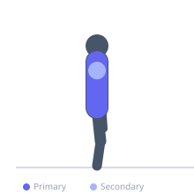
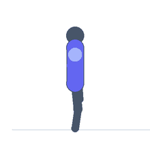

Exercise guide / Prone Cobra with Arm Pulses
Prone Cobra with Arm Pulses
A dynamic variation of the prone cobra exercise in which small rhythmic arm pulses are performed while holding the torso in the cobra extension position. The pulsing arm movement (small lifts from the hip-level position) maintains continuous engagement of the lower trapezius, posterior deltoid, and spinal extensors throughout the hold, increasing time-under-tension beyond what a static hold provides. This exercise is used in thoracic extension rehabilitation and postural correction programs.
Primary muscles
trapezius lower
erector spinae
Secondary muscles
deltoid posterior
trapezius middle
rhomboid major
Equipment
No Equipment (Bodyweight)


Starting position
- Lie face down on the floor with arms by the sides, palms facing upward, and forehead resting on the mat. This is the prone cobra starting position.
Setup
- No equipment needed. A thin mat is recommended for comfort.
Steps
- Step 1: Squeeze the glutes and lift the chest from the floor into the cobra extension. Simultaneously raise the arms slightly from the sides, maintaining the thumb-up orientation.
- Step 2: Hold the cobra position and begin performing small rhythmic arm pulses — tiny lifts of the arms toward the ceiling, approximately 2-5 cm per pulse.
- Step 3: Perform 10-20 pulses while maintaining the cobra chest elevation.
- Step 4: Lower the chest and arms to the floor. Rest and repeat.
Coaching cues
- Keep the chest up — do not let it drop during the pulses
- Thumbs up with palms facing outward to maximize posterior shoulder activation
- Look at the floor — not at the ceiling
Breathing
- Exhale as you rise into the cobra. Breathe rhythmically during the pulses — do not hold the breath.
Range of motion
- Cobra extension is held throughout. The pulse amplitude is small — quality over height.
Tempo
- Hold cobra for 20-30 seconds. Pulses at approximately 1 per second.
Common mistakes
- Losing the cobra chest elevation during the pulses — maintain the thoracic extension throughout
- Using large arm swings rather than small controlled pulses
- Neck hyperextension — the gaze should be on the floor, not the ceiling
Safety
- If acute lower back pain is present, check with a physiotherapist before performing prone extension exercises
- Avoid if thoracic or lumbar extension causes sharp, radiating pain
Training
- endurance: 10–20 reps
- endurance: 2–3 sets
- Rest: {'endurance': 60}